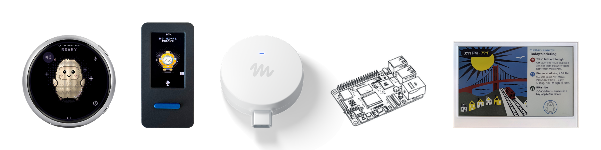

Threads｜把 Meta Muse Gadgets 裝進 ESP32 圓形螢幕：一則中文介面實作案例與 SDK 邊界

一句話摘要
這則案例的價值不在於「兩小時做完」，而在於它把雲端個人 Agent 的對話延伸到可按、可看、可聽的自製裝置；真正的工程成本仍落在板子相容性、GPIO、配對、字型、刷寫與可還原的測試流程。
Threads 可見內容：一個中文圓形螢幕的個人實作
Threads 作者 `pcedison` 表示，他將 Meta 開源的 Muse Gadgets SDK 安裝到 ESP32 圓形螢幕，使用方式是按住按鍵說話、放開後把回答以中文顯示在螢幕上。
作者同時描述以下個人經驗：
- 使用的板子是 ESP32 1.75C，價格約新台幣 1,900 元。
- 依 GitHub 安裝指南完成約花兩小時。
- GPIO 腳位、裝置配對，以及反覆 build 與 flash 是最耗時的環節；作者估計占總工時至少 85%。
- 首次開機時中文字顯示成方塊，替換中文字型並重新刷寫後才正常。
- 作者曾以 Gemini 3.8 與 Claude Opus 5.5 協助解析錯誤訊息，下一步想加入「Hey Muse」語音喚醒。
這些內容是貼文作者在當時硬體、韌體、網路、帳號與工具設定下的自述；不是 Meta 對價格、語言支援、安裝時間、模型可用性、耗電或相容性所作的保證。
上游可驗證：Muse Gadgets 是公開的 ESP32／Linux SDK
`facebookincubator/muse-gadget-sdk` 是公開、未封存的 GitHub repository。其 README 將 Muse Gadgets 定位為可自行組裝的開源裝置：使用現成 ESP32 板子或 Raspberry Pi／Linux 裝置，連接螢幕、按鍵、感測器或致動器，再與 Muse 服務配對。
本次擷取時，上游 README 可確認：
- 專案提供 ESP32 Device SDK 與 Linux Device SDK，也含用於手機串流影像至 ESP32 螢幕的測試專案。
- 裝置配對需要 SDK token，並須適用於官方 Gadget SDK Terms；開源程式碼不等於可無條件使用相關服務或跳過帳號、資格與條款。
- repository 主體採 Apache License 2.0，但 README 也列出多個保留各自上游授權的第三方檔案；衍生或散布時不能只看單一主授權。
- 上游明確提醒自行改裝可能導致板子損壞、保固失效或供電問題，應自行承擔測試風險。
為什麼值得關注：Agent 不只存在於手機與瀏覽器
與一般聊天介面相比，ESP32 類硬體把互動拆成更直接的訊號：按鍵代表輸入開始或結束、螢幕顯示短答案、喇叭或麥克風負責語音回饋。這很適合作為下列設計題目的原型：
- 桌上型快速記錄器：用按鍵取代打開手機後被通知分心。
- 家庭資訊面板：只顯示經核准、低風險的提醒或狀態。
- 教學型嵌入式專題：讓學生同時理解硬體 I/O、網路配對、模型回覆與錯誤除錯。
但它不等於離線語音助理。裝置上的韌體、雲端 Muse 服務、SDK token、帳號權限、網路連線與可能連接的第三方服務，是彼此獨立的邊界；應分別檢視資料流向與權限範圍。
導入前檢核：先把可還原與資料界線做在前面
- 先在可替換的測試板與非敏感帳號情境中驗證，不把唯一的日常裝置作為第一台實驗機。
- 刷寫或接線前保存原始韌體、板型與電源設定，並確認能復原；不要把聊天模型產生的接線、設定或燒錄建議直接當成已驗證步驟。
- SDK token 視同可連接服務的機密資料，避免放進公開 repository、截圖、聊天室或韌體二進位檔。
- 先以最小能力開始：單一按鍵、單一顯示頁與無敏感個資的測試內容；要接入行事曆、家庭自動化或其他帳號前，再逐項審查權限與資料傳送目的地。
- 語音喚醒、長期收音與家庭環境感測會增加旁人告知、同意、保存期限與誤觸發風險；不應因為裝置小就忽略這些界線。
來源、查核與限制
- 原始分享連結與 canonical Threads 貼文均已保存；本文僅使用可見貼文文字與可讀取的上游 GitHub 文件。
- 官方 GitHub README 圖片已本地保存為 PNG：1874 × 470、513,016 bytes、SHA-256 `5a76a20ad72b6d5a6cea9dd32f33d77054e9ce095db5efc86c21ecc632d3811d`。
- 未安裝、刷寫、配對或測試任何裝置；本文不是硬體安裝、接線、側載或繞過服務資格的操作指南。
- Threads 畫面上的瀏覽與互動數為擷取時觀察值，未列為長期指標。
原始連結
- Threads 貼文：https://www.threads.com/@pcedison/post/DfHinbDk1NC
- Muse Gadgets GitHub：https://github.com/facebookincubator/muse-gadget-sdk
- SDK token 設定頁：https://gadgets.muse.ai/settings/sdk-tokens
- Gadget SDK Terms：https://gadgets.muse.ai/sdk-terms